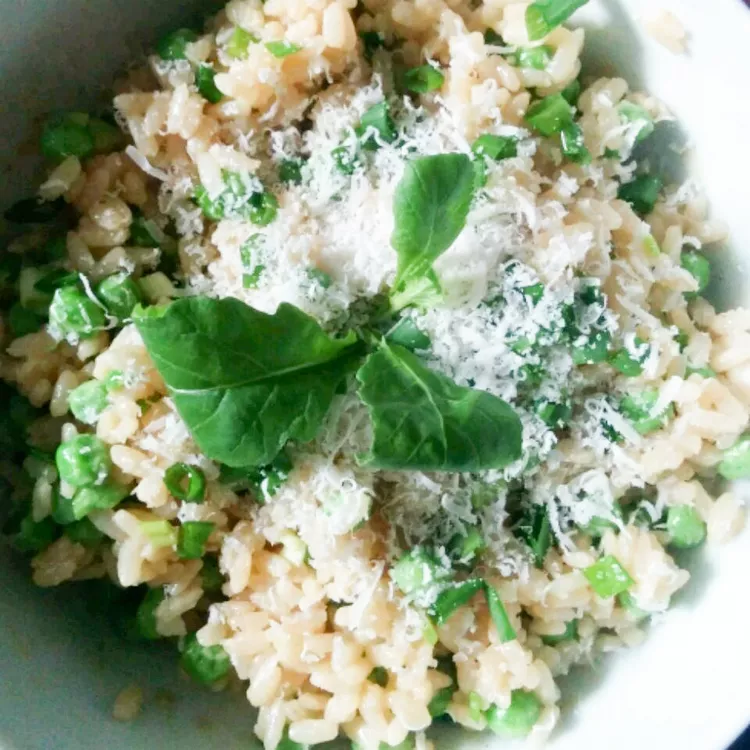

Basic Microwave Risotto
Microwave Risotto is great because of its forgiving nature; if you forget it for a half hour, nothing is lost. Also, it is a wonderful clean-out-the-fridge, use-your-imagination, I-just-bounced-five-checks recipe.
It reheats well too. You can use margarine or olive oil in place of the butter, and you can use apple juice or white grape juice in place of the wine.
Ingredients
- 3 tablespoons butter
- 1 clove garlic, minced
- 1 onion, chopped
- 1 ½ cups vegetable broth
- 1 cup uncooked Arborio rice
- ¾ cup white wine
- ¼ cup grated Parmesan cheese
Steps
- In a 3 quart, microwave safe casserole dish combine butter, garlic and onion. Place dish in microwave and cook on high for 3 minutes.
- Place vegetable broth in a microwave safe dish. Heat on microwave until the broth is hot but not boiling (approximately 2 minutes).
- Stir the rice and broth into the casserole dish with the onion, butter and garlic mixture. Cover the dish tightly and cook on high for 6 minutes.
- Stir wine into the rice. Cook on high for 10 minutes more. Most of the liquid should boil off. Stir the cheese into the rice and serve.